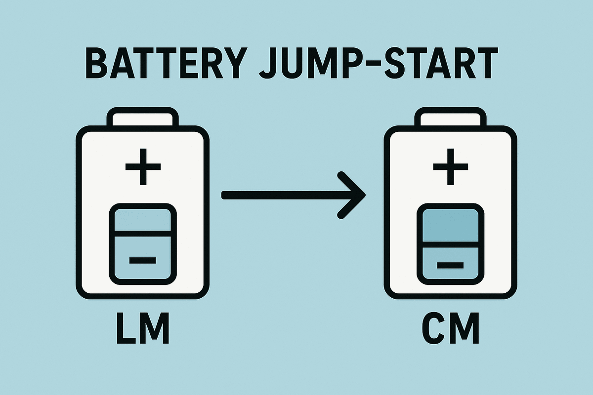

Recharge for Re-Entry?
⚠️ The Situation
- Re-entry — the one part the LM lifeboat can't help with — is about 30 hours away
- During the post-explosion scramble, the dying Command Module ran on its re-entry batteries — battery A lost about half its charge (~20 of 40 amp-hours)
- The CM's three entry batteries now hold about 99 of their ~120 amp-hours. A normal re-entry uses roughly 70–80
- The math works — barely. No cushion for a longer timeline, an extra system draw, or one weak battery
- In Houston, flight controller John Aaron's power team has an idea nobody designed for: push electricity backwards through the docking umbilical, letting the LM's descent batteries refill CM battery A
The Twist:
The umbilical linking the two ships was built to send power the other way — from the CM, keeping the docked LM warm on the way to the Moon. Reversing it has never been tried. Not in space. Not in a simulator. Not anywhere.

🤔 WHAT SHOULD MISSION CONTROL DECIDE?
👆 Choose one of the options above 👆